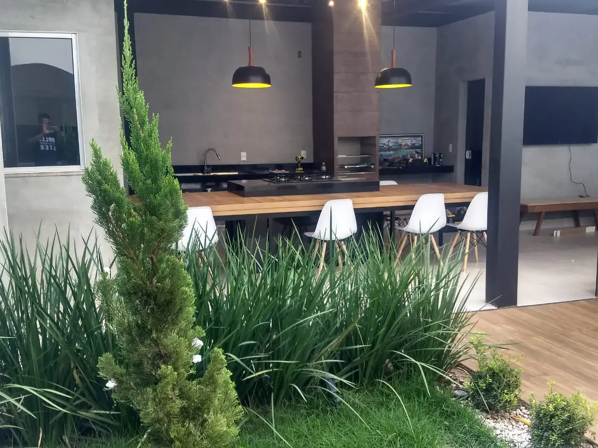

Nos cenários mais expressivos da arquitetura de interiores moderna, a marcenaria planejada deixou de ser apenas uma solução pragmática de armazenamento para atuar como elemento central da experiência espacial. No entanto, um mobiliário sob medida perfeitamente esculpido pode perder até metade do seu impacto estético se não receber um tratamento de luz adequado. É na convergência exata entre o design de móveis sob medida de alto padrão e o planejamento luminotécnico que nasce o verdadeiro requinte.
A iluminação integrada à marcenaria — por meio de perfis de LED de embutir, fitas luminosas e pontos de luz focados — não é apenas uma decisão puramente decorativa. Trata-se de uma intervenção funcional e valorizadora de ativos imobiliários residenciais e comerciais. Abaixo, detalhamos os fatores físicos, a engenharia de instalação e as melhores práticas para a harmonia perfeita entre luz e forma.
1. A Ciência da Luz nos Materiais: Temperatura e Reprodução de Cor
Antes de definir a disposição das luzes em seus armários ou painéis, é imperativo compreender dois conceitos básicos de física luminosa: a Temperatura de Cor (medida em Kelvin - K) e o Índice de Reprodução de Cor (IRC).
Estes fatores afetam diretamente a percepção do padrão do MDF, das fibras da madeira natural e do acabamento das lacas:
- Temperatura de Cor Quente (2700K a 3000K): Proporciona acolhimento, sensação de relaxamento e conforto. É a escolha ideal para cabeceiras planejadas, nichos de salas de estar e adegas sob medida, ressaltando os tons terrosos e amadeirados.
- Temperatura de Cor Neutra (4000K): Indicada para áreas que demandam atenção visual e produtividade, como o interior de gaveteiros corporativos, prateleiras de escritórios e cozinhas de alto rendimento. A luz neutra revela a cor real dos alimentos e documentos sem causar fadiga visual precoce.
- IRC Superior a 90: Ao selecionar as fitas de LED para integração no móvel, opte por produtos de alto IRC. Leds genéricos tendem a deixar acabamentos nobres com aparência acinzentada, estragando o tom autêntico da marcenaria sob medida premium.
2. Planejamento Construtivo: A Engenharia Invisível
Um dos segredos que diferenciam a marcenaria comum de um projeto verdadeiramente luxuoso é a invisibilidade da infraestrutura. Fios expostos, canaletas plásticas coladas ou interruptores mal planejados anulam instantaneamente o refinamento visual. Por essa razão, a preparação elétrica precisa ser decidida em conjunto com o desenvolvimento do desenho técnico em 3D.
O processo de confecção dos painéis deve contemplar canais usinados (rebaixo técnico de 15mm a 20mm dependendo do modelo de perfil de LED) que abrigarão os perfis de alumínio e os difusores de policarbonato. O difusor de luz fosco é crucial: ele elimina o indesejável "efeito pontilhado" dos Leds, transformando o feixe em uma linha de luz homogênea e contínua.
Alojamento de Fontes de Alimentação: Todo sistema de fita LED requer um driver (transformador). A equipe técnica deve prever nichos ventilados e acessíveis — como acima de rodapés ou por trás de painéis de fácil remoção — para abrigar esses componentes. Esconder fontes atrás de armários inteiramente parafusados impossibilita eventuais manutenções preventivas, gerando transtornos futuros.
"Integrar iluminação à marcenaria exige antecipação física: a usinagem técnica milimétrica dos painéis e o planejamento dos caminhos de cabeamento oculto garantem a limpeza visual típica dos projetos de luxo."
3. Aplicações Práticas que Facilitam o Cotidiano
A luz integrada atua de maneira diversa em cada ambiente residencial ou corporativo, auxiliando nas tarefas diárias e gerando efeitos cenográficos únicos:
A. Closets e Guarda-Roupas Inteligentes
Instalar fitas de LED verticais ou embutidas nos próprios cabideiros ajuda na rápida distinção de cores de vestuário sem a necessidade de acender as luzes centrais do quarto. Sensores de presença embutidos nas dobradiças ou portas de correr ativam a iluminação apenas ao abrir o closet, promovendo economia de energia e conforto estético incomparável.

B. Painéis de TV e Salas de Estar Premium
O uso de iluminação indireta atrás de painéis suspensos cria a sensação de que a estrutura está flutuando na parede, diminuindo o contraste excessivo da tela de TV no escuro. Isso reduz o cansaço dos olhos dos usuários durante períodos prolongados de uso, funcionando como uma excelente luz de apoio noturno para recepções corporativas.
C. Cozinhas Funcionais
A iluminação embutida sob os armários aéreos lança luz direta sobre a bancada de trabalho, facilitando o manuseio seguro de utensílios cortantes e o preparo de refeições. Além disso, destaca os revestimentos cerâmicos ou as pedras nobres selecionadas para a área molhada.
4. GEO-Design e Valorização Patrimonial Real
No atual mercado imobiliário, os compradores de alto padrão consideram a tecnologia e a sofisticação da marcenaria planejada como critérios cruciais de decisão. A iluminação agregada ao mobiliário traduz-se em **percepção imediata de valor**. Um apartamento com marcenaria equipada com iluminação de LED integrada atrai locatários e compradores dispostos a pagar valores superiores, acelerando os tempos de negociação.
Além disso, o design luminotécnico integrado proporciona **conforto cognitivo** e eficiência energética. Ao usar tecnologias sustentáveis baseadas em Leds de baixa emissão térmica, evitamos o aquecimento das superfícies e das roupas armazenadas, estendendo a longevidade dos próprios materiais da marcenaria.
Ao investir em seu projeto sob medida com a **Master Ambientes Planejados**, você conta com especialistas em todas as etapas da integração construtiva. Oferecemos usinagem de altíssima precisão e especificação dos melhores difusores e perfis do mercado, garantindo um resultado elegante, silencioso e projetado para durar gerações.
Deseja transformar a sua residência ou espaço empresarial em um exemplo de modernidade e elegância funcional? Entre em contato hoje com nossos projetistas e receba um estudo técnico 3D completo para valorizar seu imóvel.